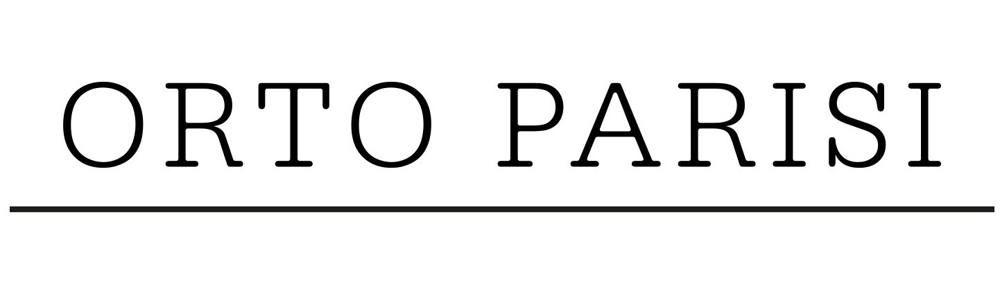

Orto Parisi is an Italian perfume brand founded by perfumer and owner of the Nasomatto brand Alessandro Gualtieri in 2014, who is considered one of the main hooligans and provocateurs of the perfumery world. Alessandro dedicated his new page of life to his great-grandfather Vincenzo Parisi and his garden, to which he gave many years of his life. The garden, which, according to Alessandro, was shrouded in a sense of eternity. He gave the garden many years of his life, adored every bush and tree, cultivating them with bright feelings. Galtieri admits that he has never tasted such delicious vegetables and fruits grown with love and care anywhere else as in his great-grandfather's garden. In memory of the ancestor and for everyone who creates and distributes the flavors of life, trying to catch and save time, the niche brand Orto Parisi was founded. The goal of Orto Parisi is to show that the body is a garden, and its smells are a reflection of the soul.
Country: Netherlands
Main Activity: Fragrances
Niche Designer
All Fragrances